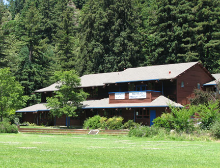

Welcome to the Monte Rio Union School District website.
Home of the TIGERS!
New parent program; garden & cook with your child.
Monte Rio Union is located in beautiful Sonoma County on the Russian River.
This small community is interwoven between the river and the redwood-crested mountains with the ocean less than 10 miles away. Come visit us and experience it for yourself!
School Newspaper now ONLINE!! Click Newsletters menu above.